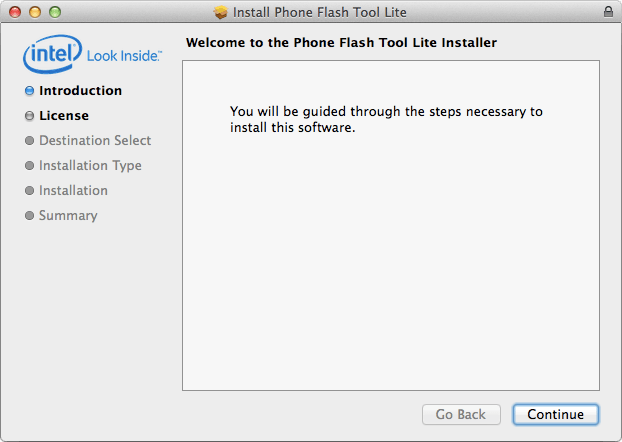

-
Get the latest Flash Tool Lite.
- On the USB key: downloads → Mac
- Copy PhoneFlashToolLite_[version]_mac64.dmg to your computer.
-
Double-click on PhoneFlashToolLite_[version]_mac64.pkg to start the installer.

-
Follow the installation wizard prompts. Click “Next” where needed.